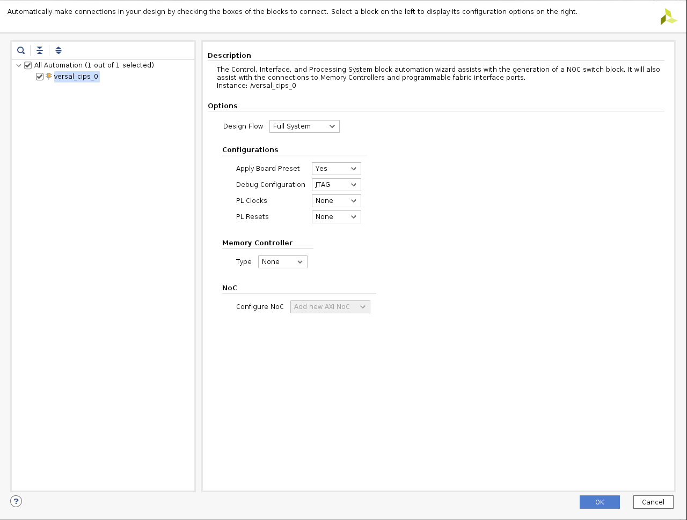
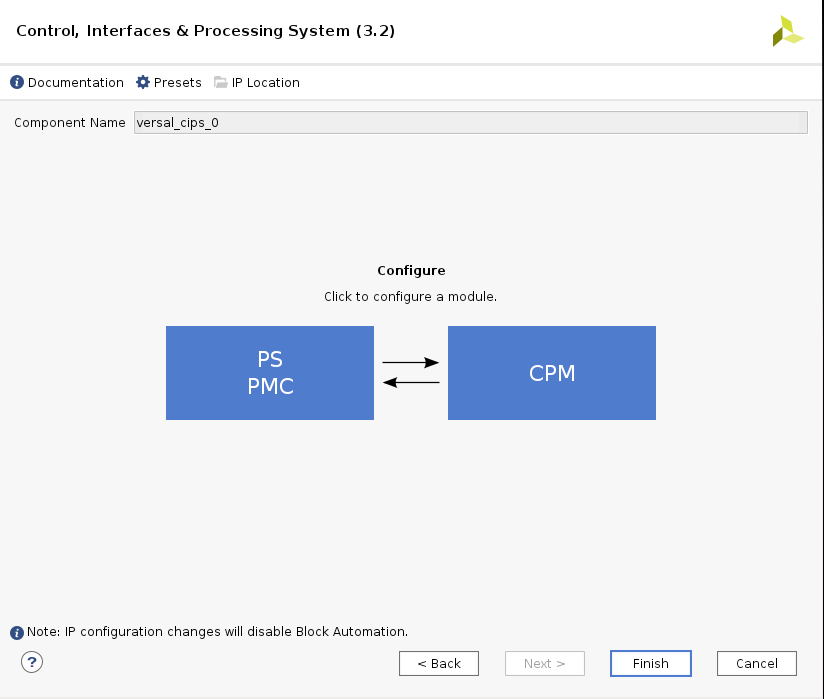
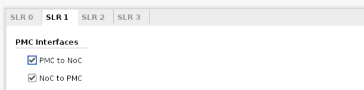
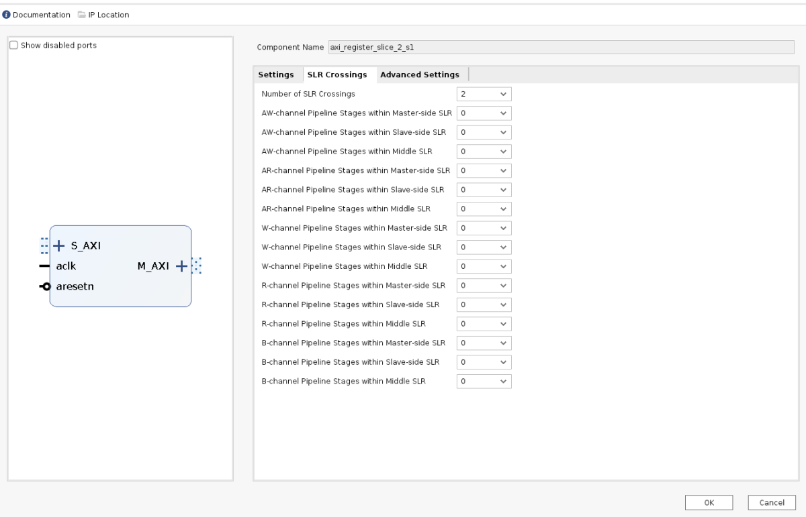

System Design Example for Versal Stacked Silicon Interconnect Devices¶
This chapter guides you through building a system based on Versal® devices using available tools and supported software blocks for Stacked Silicon Interconnect (SSI) devices. It explains how to create an embedded design utilizing PL AXI GPIO and PL AXI UART using the Vivado® tool for the Versal Premium VP1802 SSI device based VPK180 board. Refer to the Documentation Reference Guide (UG949) for information on designing with SSI devices. It also describes configuring and building the Linux operating system for an Arm® Cortex™-A72 core-based APU for a targeted Versal ACAP device.
Design Example: Using AXI GPIO¶
The design example uses PL-based AXI GPIO interfaces to control the LEDs on the board using a Linux application (gpiotest). To utilize the four Super Logic Regions (SLR) available in the VP1802 SSI technology device, the PL AXI GPIO interface paths for LED0, LED1, LED2, and LED3 are routed via SLR-0, SLR-1, SLR-2, and SLR-3, respectively.
The RPU bare-metal example application uses the PL-based AXI UART lite to print the debug messages on the AXI UART console instead of using the PS UART console.
The steps to configure the following are described in this design example:
Versal® ACAP CIPS IP core configuration for SSI technology devices.
NoC (DDR) IP Core configuration and related connections required for SSI technology devices.
Configure AXI GPIO and AXI UART PL IPs and related connections to the CIPS via PS and PL interfaces.
Versal ACAP CIPS IP Core Configuration¶
The Versal® ACAP CIPS IP core allows you to configure the processing system and the PMC block, including boot mode, peripherals, clocks, interfaces, and interrupts, among other things.
Managing the Versal ACAP CIPS IP Core in the Vivado Design Suite¶
To create a new project and block design, follow the steps as given in Versal ACAP CIPS and NoC (DDR) IP Core Configuration.
To get started, add an IP from the IP catalog by clicking the Add IP button.
In the search box, type CIPS to find the Control, Interfaces, and Processing System.
Double-click the Control, Interface & Processing System IP to add it to the block design. The CIPS IP core appears in the diagram view, as shown in the following figure:

Click Run Block Automation.
Configure the run block settings as shown in the following figure:
Double-click versal_cips_0 in the Block Diagram window.
Ensure that all the settings for Design Flow and Presets are as shown in the following figure.

Click Next, then click PS PMC.
Go to Peripherals and enable the TTC peripherals as shown in figure below:
Make sure the IO configuration settings are as shown below:

Note
VPK180 preset values will set QSPI and SD as the default boot modes. No changes are required.
Click Interrupts and configure settings as shown in figure below:

Click Finish and Finish to close the CIPS GUI.
NoC (and DDR) IP Core Configuration¶
This section describes the NoC (and DDR) configuration and related connections required for use with the CIPS configured earlier in previous section. The NoC IP core allows configuring the NoC and enabling the DDR memory controllers.
Configuring NoC and CIPS¶
Open CIPS → PS-PMC.
Click NoC and enable the NoC coherent, non-coherent interfaces and the NoC to PMC interfaces for Master SLR (SLR-0) as shown below.

Enable PMC to NoC and NoC to PMC connectivity for slave SLRs (SLR-1, SLR-2, SLR3) as shown below.


Click Finish and Finish to close the CIPS GUI.
Add two AXI NoC IP from the IP catalog.
Double-click the axi_noc-0. From Board tab, enable the LPDDR triplet and associated clocks as shown below.

Select the General tab, set Number of AXI Slave interfaces, AXI Clocks to 8, and the Number of Inter-NoC Master Interfaces to 5 as shown below.

From the Inputs tab, configure the following settings for the 8 AXI Slave interfaces as shown below.

Configure the following settings from the Connectivity tab.

Click OK.
Double-click the axi_noc-1. From General tab, set Number of AXI Slave interfaces to 3, Number of AXI Master interfaces to 4, AXI Clocks to 7, and the Number of Inter-NoC Slave Interfaces to 5 as shown below.
From the Inputs tab, configure the 3 AXI Slave interfaces to PS PMC as shown below:

From the Outputs tab, configure the 4 AXI Master interfaces to PS PMC as shown below:

Configure the following settings from the Connectivity tab.

Click OK.
Make connections between CIPS and NoC as shown below.
Configuring PL AXI GPIO and AXI UART¶
This section describes the PS and PL configurations and the related connections to create a complete system with AXI GPIO and AXI UART. You can do this by adding the required IPs from the Vivado IP catalog and then connect the components to blocks in the PS subsystem. To configure the hardware, follow these steps:
Configuring CIPS PS-PL interface¶
To connect the PL IPs to CIPS, follow these steps.
Double-click the Versal ACAP CIPS IP core.
Click PS-PMC→ PS-PL Interfaces.
Enable the M_AXI_FPD interface and set the Number of PL Resets to 1, as shown in the Image.

Click Clocking, and then click on the Output Clocks tab.
Expand PMC Domain Clocks. Then expand PL Fabric Clocks. Configure the PL0_REF_CLK (PL CLK 0) to 300 MHz as shown in the following figure:

Click Finish and OK to complete the configuration and return to the block diagram.
Configuring PL Hardware¶
To configure the PL IPs used in this design example, follow these steps.
Right-click the block diagram and select Add IP from the IP catalog.
Search for AXI GPIO and double-click the AXI GPIO IP to add four instance of IP into the design.
Search for AXI Uartlite in the IP catalog and add it into the design.
Click Run Connection Automation in the Block Design view.

The Run Connection Automation dialog box opens.
In the Run Connection Automation dialog box, select the All Automation check box.
This checks the automation for all the ports of the AXI GPIO IP.
Click GPIO of
axi_gpio_0and set the Select Board Part Interface to Custom as shown below.
Click S_AXI of
axi_gpio_0. Set the configurations as shown in the following figure.Repeat steps 6 and 7 for
axi_gpio_1,axi_gpio_2, andaxi_gpio_3.Click S_AXI of
axi_uartlite_0. Set the configurations as shown in the following figure.Click UART of
axi_uartlite_0. Set the configurations as shown in the following figure.
Click OK.
This configuration sets the following connections:
Connects the
S_AXI of AXI_GPIOand AXI UART lite toM_AXI_FPDof CIPS with SmartConnect as a bridge IP between CIPS and AXI GPIO IPs.Enables the processor system reset IP.
Connects the
pl0_ref_clkto the processor system reset, AXI GPIO, and the SmartConnect IP clocks.Connects the reset of the SmartConnect and AXI GPIO to the
peripheral_aresetnof the processor system reset IP.
Click Run Connection Automation in the block design window and select the All Automation check box.
Click ext_reset_in and configure the setting as shown below.

This connects the ext_reset_in of the processor system reset IP to the pl_resetn of the CIPS.
Click OK.
Disconnect the aresetn of SmartConnect IP from
peripheral_aresetnof processor system reset IP.Connect the aresetn of SmartConnect IP to
interconnect_aresetnof processor system reset IP.

Double-click the axi_gpio_0 IP to open it.
Go to the IP Configuration tab, and configure the settings as shown in the following figure.

Make the same setting for
axi_gpio_1,axi_gpio_2, andaxi_gpio_3.Delete the external pins of the
axi_gpio_0IP and expand the interface.Make the output of
axi_gpio_0IP as External.Right-click the external port of
axi_gpio_0IP and select External Port Properties and rename as Dout_0.

Repeat step 21 to step 23 for
axi_gpio_1,axi_gpio_2, andaxi_gpio_3and rename as Dout_1, Dout_2, and Dout_3, respectively.Add three instances of AXI Register Slice IP to be placed on SLR-1, SLR-2, and SLR-3.
Right-click a Register Slice IP and select Block Properties and rename as axi_register_slice_1_s2 as shown below.
Double-click the AXI Register Slice IP and set the Register Slice Option as Light as shown below.

{kind=link}
{kind=link}
{kind=link}
{kind=link}
{kind=link}
{kind=link}
{kind=link}
{kind=link}
{kind=link}
{kind=link}
Repeat step 26 and 27 for the second and third instances of AXI Register Slice IP and rename as
axi_register_slice_2_s2andaxi_register_slice_3_s2, respectively.
Note
axi_register_slice_1_s2, axi_register_slice_2_s2, and axi_register_slice_3_s2 are placed to SLR-1, SLR-2, and SLR-3, respectively using the constraints file provided as part of the package in the ``pl_gpio_uart/constrs` folder.
SLR Crossing from SLR-0 to SLR-1
Note
SLR crossing registers are added to improve timing closure and alleviate routing congestion of long resources.
Add two instances of AXI Register Slice IP to handle the SLR crossing from SLR-0 to SLR-1.
Right-click the Register Slice IP and select Block Properties and rename as
axi_register_slice_1_s1.Double-click the Register Slice IP and set the Register Slice Option as SLR Crossing as shown below.

Repeat step 30 and step 31 for the second instance of AXI Register Slice IP and rename as
axi_register_slice_1_s3.
SLR Crossing from SLR-0 to SLR-2
Similarly add two instances of AXI Register Slice IP to handle the multi SLR crossing from SLR-0 to SLR-2.
Right-click a Register Slice IP and select Block Properties and rename as
axi_register_slice_2_s1.Double-click a Register Slice IP and set the Register Slice Option as Multi SLR Crossing as shown below.
Open SLR Crossing tab, and set Number of SLR Crossing as 2 as shown below.
Repeat step 34, step 35, and step 36 for the second instance of AXI Register Slice IP and rename as
axi_register_slice_2_s3.
{kind=link}
{kind=link}
SLR Crossing from SLR-0 to SLR-3
Similarly add two instances of AXI Register Slice IP to handle the SLR crossing from SLR-0 to SLR-3.
Right-click a Register Slice IP and select Block Properties and rename as
axi_register_slice_3_s1.Double-click a Register Slice IP and set the Register Slice Option as Multi SLR Crossing as shown below.

Open SLR Crossing tab, and set Number of SLR Crossing as 3 as shown below.

Repeat step 39, step 40, and step 41 for the second instance of the AXI Register Slice IP and rename as
axi_register_slice_3_s3.Disconnect axi_gpio_0 , axi_gpio_1 , axi_gpio_2 and axi_gpio_3 from axi smart connect and connect the register slices as shown below.

Click Run Connection Automation in the Block Design view. Select
aclkof all register slices and click OK.Double-click axi_uartlite_0 to open the IP. Go to the IP Configuration tab and configure the settings as shown in the following figure.

Add Clock Wizard IP. Double-click to open the IP.
Go to Clocking Features tab and set the configuration as shown below:

Make sure the Source option in Input Clock Information is set to Global buffer.
Go to Output clocks tab and configure the output clock as 250 MHz as follows:
Right-click
pl0_ref_clkof CIPS and click Disconnect Pin.Connect the
pl0_ref_clkfrom CIPS to inputclk_in1of the Clocking wizard.Connect the output of clocking wizard to
slowest_sync_clockof Processor System Reset IP.This will help in avoiding timing failure.
{kind=link}
The overall block design is shown in the following figure:

Validating the Design and Generating the Output¶
To validate the design and to generate the output product, follow these steps:
Return to the block design view and save your block design (press Ctrl+S).
Right-click in the white space of the Block Diagram view and select Validate Design. Alternatively, you can press the F6 key. A message dialog box opens as shown below.
The Vivado tool will prompt you to map the IPs in the design to an address. Click Yes.
Note
The number of address segments may vary depending on the number of memory mapped IPs in the design.
Once the validation is complete, A message dialog box opens as shown below:

Click OK to close the message.
Click the Sources window.
Expand Constraints.
Right-click on constrs_1-> ADD Sources.
The Add Sources window opens.
Choose Add or Create Constraints option and click Next.
Choose the .xdc file to be added.
Note
The constraints file is provided as part of the package in the
pl_gpio_uart/constrsfolder.Click Finish.
Click Hierarchy.
In the Sources window, under Design Sources, expand edt_versal_wrapper.
Right-click the top-level block design, edt_versal_i : edt_versal (
edt_versal.bd), and select Generate Output Products.Click Generate.
When the Generate Output Products process completes, click OK.
In the Sources window, click the IP Sources view. Here, you can see the output products that you just generated, as shown in the following figure.

Synthesizing, Implementing, and Generating the Device Image¶
Follow these steps to generate a device image for the design.
Go to Flow Navigator→ Program and Debug, click Generate Device Image and click OK.
A No Implementation Results Available menu appears. Click Yes.
A Launch Run menu appears. Click OK.
When the Device Image Generation completes, the Device Image Generation Completed dialog box opens.
Click Cancel to close the window.
Export hardware after you generate the Device Image.
Note
The following steps are optional and you can skip these and go to the Exporting Hardware section. These steps provide the detailed flow for generating the device image by running synthesis and implementation before generating device image. If you need to understand the flow for generating the device image, follow the steps provided below.
Go to Flow Navigator→ Synthesis and click Run Synthesis.

If Vivado prompts you to save your project before launching synthesis, click Save.
While synthesis is running, a status bar is displayed in the upper right-hand window. This status bar spools for various reasons throughout the design process. The status bar signifies that a process is working in the background. When synthesis is complete, the Synthesis Completed dialog box opens.
Select Run Implementation and click OK.
When implementation completes, the Implementation Completed dialog box opens.
Select Generate Device Image and click OK.
When Device Image Generation completes, the Device Image Generation Completed dialog box opens.
Click Cancel to close the window.
Export hardware, after you generate Device Image.
Exporting Hardware¶
From the Vivado main menu, select File→ Export → Export Hardware. The Export Hardware dialog box opens.
Choose Include bitstream and click Next.
Provide a name for your exported file (or use the default provided) and choose the location. Click Next.
A warning message appears if a hardware module has already been exported. You may choose to pick a different name for this design or click Yes to overwrite the existing XSA file, if the overwrite message is displayed.
Click Finish.
Example Project: FreeRTOS AXI UARTLITE Application Project with RPU¶
This section explains how to configure and build the FreeRTOS application for an Arm Cortex-R5F core based RPU on a Versal device.
The following steps demonstrate the procedure to create a FreeRTOS Application from Arm Cortex-R5F:
Start the Vitis™ IDE and create a new workspace, for example,
c:/edt/freertos.Select File→ New → Application Project. The Creating a New Application Project wizard opens. If this is the first time that you have launched the Vitis IDE, you can select Create Application Project on the Welcome screen as shown in the following figure.

Note
Optionally, you can check the box next to Skip welcome page next time to skip seeing the welcome page every time.
There are four components of an application project in the Vitis IDE: a target platform, a system project, a domain and a template. To create a new application project in the Vitis IDE, follow these steps:
A target platform is composed of a base hardware design and the meta-data used in attaching accelerators to declared interfaces. Choose a platform or create a platform project from the XSA that you exported from the Vivado Design Suite.
Put the application project in a system project, and associate it with a processor.
The domain defines the processor and operating system used for running the host program on the target platform.
Choose a template for the application, to quick start development. Use the following information to make your selections in the wizard screens.
Table: Wizard Information
Wizard Screen
System Properties
Setting or Command to Use
Platform
Create a new platform from hardware (XSA)
Click Browse to add your XSA file
Platform Name
vpk180_platform
Application Project Detail
Application project name
freertos_gpio_test
Select a system project
+Create New
System project name
freertos_gpio_test_system
Processor
versal_cips _0_pspmc_0_psv_cortexr5_0
Dom
Select a domain
+Create New
Name
The default name assigned
Display Name
The default name assigned
Operating System
freertos10_xilinx
Processor
versal_cips _0_pspmc_0_psv_cortexr5_0
Templates
Available
Empty
Templates
Application (C)
The Vitis software platform creates the board support package for the Platform project (vpk180_platform) and the system project (freertos_gpio_test_system) containing an application project named freertos_gpio_test under the Explorer view after performing the preceding steps.
Delete the source files under src/ directory and Copy the freertos source code files from the FreeRTOS project path,
<design-package>/ch5_system_design_example_source__files/rpu/to thesrc/directory.Configure the Vitis IDE to enable AXI UARTLITE for RPU application debug console under the FreeRTOS Board Support Package.
Navigate to platform.spr under vpk180_platform project, and then select Modify BSP settings under Board support package, and modify stdin and stdout to axi_uarlite_0 by pressing <Y> option as shown in the figure.

Click <OK> to save the above configuration and exit the configuration wizard.
Right-click freertos_gpio_test_system and select Build Project. Alternatively, you can click
 .
.For building the Linux images and incorporating the FreeRTOS elf into the image, see Example Project: Creating Linux Images Using PetaLinux.
On PL AXI UART Serial Console, RPU debug logs will be printed as below:
Gpio Initialization started Counter 0 Counter 1 Counter 2 Counter 3 Counter 4 Counter 5
Example Project: Creating Linux Images Using PetaLinux¶
This section explains how to configure and build the Linux operating system for an Arm Cortex-A72 core-based APU on a Versal device. You can use the PetaLinux tool with the board-specific BSP to configure and build Linux images.
This example needs a Linux host machine. Refer to the PetaLinux Tools Documentation Reference Guide UG1144 for information on dependencies and installation procedure for the PetaLinux tool.
Important
This example uses the VPK180 PetaLinux BSP to create a PetaLinux project. Ensure that you have downloaded the respective BSP for PetaLinux (VPK180).
Board |
QSPI/SD |
OSPI |
eMMC |
|---|---|---|---|
VPK180 Production Board |
N/A |
N/A |
Copy the respective board’s PetaLinux BSP to the current directory.
Set up the PetaLinux environment
$ source <petalinux-tools-path>/settings.csh
Create a PetaLinux project using the following command.
$ petalinux-create -t project -s xilinx-vpk180-vxxyy.z-final.bsp -n led_example
Note
For VPK180 board, use xilinx-vpk180-vxxyy.z-final.bsp after the -s option in the command.
Change to the PetaLinux project directory using the following command.
$cd led_example
Copy the hardware platform project XSA to the Linux host machine.
Note
For the VPK180 board, use the XSA file that you generated in the Design Example: Using AXI GPIO.
Reconfigure the BSP using the following commands.
$ petalinux-config --get-hw-description=<path till the directory containing the respective xsa file>
This command opens the PetaLinux Configuration window. For this example, no need to change anything in this window.
Click <Save> to save the above configuration and then <Exit> to exit the configuration wizard.
Create a Linux application named gpiotest within the PetaLinux project using the following command.
$petalinux-create -t apps --template install --name gpiotest --enable
Copy application files from
<design-package>/<vpk180>/linux/bootimagesto the project using the following commands.$cp <design-package>/ch7_system_design_example_source__files/apu/gpiotest_app/gpiotest/files/* <plnxproj-root>/project-spec/meta-user/recipes-apps/gpiotest/files/ $cp <design-package>/ch7_system_design_example_source__files/apu/gpiotest_app/gpiotest/gpiotest.bb <plnx-proj-root>/project-spec/meta-user/recipes-apps/gpiotest/gpiotest.bb $cp <design-package>/ch7_system_design_example_source__files/apu/device_tree/system-user.dtsi <plnx-proj-root>/project-spec/meta-user/recipes-bsp/device-tree/files/system-user.dtsi
Enable GPIO support within kernel configuration.
$petalinux-config -c kernel
Note
This command opens the kernel configuration wizard for the PetaLinux project.
Navigate to Device drivers→ GPIO Support and enable it by pressing the <Y> key. Press Enter and enable the Debug GPIO calls and
/sys/class/gpio/...(sysfs interface)entries by pressing the <Y> key as shown in the following figure.
Navigate to Memory mapped GPIO drivers and enable Xilinx GPIO support and Xilinx Zynq GPIO support by pressing <Y> key as shown in the following figure.

Click <Save> to save the above configuration and then <Exit> option to exit the configuration wizard.
Configure ROOTFS to disable the AIE, STDC++, and Tcl options to reduce the rootfs size to fit into both SD and OSPI/QSPI Flash partitions.
petalinux-config -c rootfs
Navigate to User Packages and disable aie-notebooks, openamp-demo-notebooks, packagegroup-petalinux-jupyter, pm-notebooks, python3-ipywidgets support by pressing <Y> key as shown in the following figure.

Navigate to Filesystem Packages → misc → gcc-runtime and disable libstdc++ support by pressing <Y> key as shown in the following figure.
Navigate to Filesystem Packages → devel → tcltk → tcl and disable tcl support by pressing <Y> key as shown in the following figure.
Click <Save> to save the above configuration and then click <Exit> to exit the configuration wizard.
Note
Only SD and QSPI boot modes will work on VPK180 Production boards.
Build the Linux images using the following command.
$ petalinux-build
After flashing the built images, all four LEDs which are connected to slave SLR will be turned on on the VPK180 board.